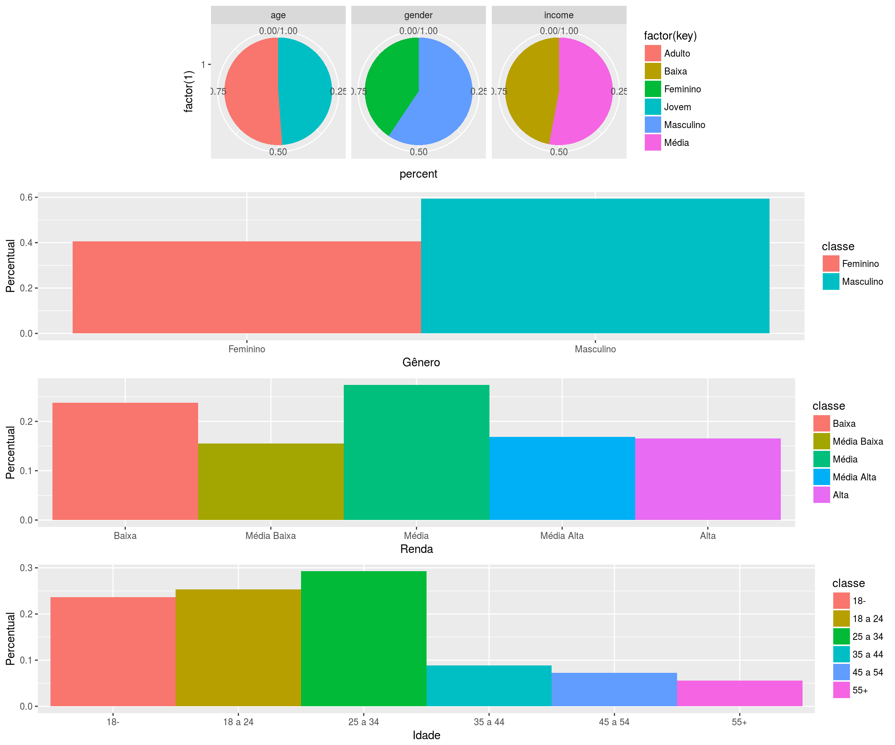

analisaPorRua
Os estudos de percepção realizados até o momento têm focado em capturar diversas imagens espalhadas pela cidade, obter as QScores/preferências das pessoas e treinar modelos de mais baixo nível ou alto nível (vide nosso artigo do HT ou o artigo com índice de ceu, verde, etc.) para predizer preferências para novas fotos que ainda não foram avaliadas por pessoas. Com isso surgem alguns pontos a serem considerados:
- Os modelos treinados com estes conjuntos de dados tendem a capturar as tendências médias, o típico presente nos dados. E se pensarmos em analisar outro contexto social, ruas de outros locais ou, ainda, traçar um panorama detalhado de alguma rua?
- O contexto social podemos pensar em lidar capturando preferências dos diferentes segmentos sociais
- As ruas de outras cidades podemos pensar em capturar imagens de outras cidades, cujo contexto seja mais parecido com o contexto da cidade que queremos avaliar
- E o panorama detalhado da rua? Precisamos ter ideias mais precisas de como são as várias ruas daquela cidade, suas particularidades, para que os modelos treinados com esses dados possam reproduzir mais fielmente as preferências das pessoas sobre aqueles locais. Com essa ideia estamos buscando avaliar as particularidades, ou o que podemos ganhar/perder, pensando em captura de percepções em um nível mais micro em relação à captura de percepção em um nível mais macro.
Para isso, foram escolhidas 4 ruas de Campina Grande, 20 fotos por rua (5 pontos da rua x 4 ângulos), para avaliação quanto à questão agradável. 2 dessas ruas apresentaram os pontos de maior divergência de percepção em nossa análise anterior (Edésio Silva e Inácio Marques), uma rua apresentou o ponto de maior homogeneidade (Manoel Pereira), porém com notas baixas, e a outra rua é uma rua importante do centro da cidade (Maciel Pinheiro), que tem uma tendência de homogeneidade, com notas boas.
Alguns questionamentos foram inicialmente levantados:
- Na média as ruas são parecidas ou não? Tem alguma rua que parece muito boa ou muito ruim?
- Será que ruas que são parecidas na média, são de fato similares?
- Olhando a dispersão da rua como um todo, posso tentar dizer algo sobre a rua?
- Olhando as variações dos QScores por número/ponto na rua, consigo perceber variações que podem indicar problemas?
- Confrontando as variações no QScores com as fotos, podemos apontar problemas/virtudes das ruas?
Tamanho das amostras e comparação entre rankings
Abaixo temos, primeiramente, uma análise, para determinar o tamanho da amostra para 95% de confiança. Em seguida, temos a comparação do ranking geral com 29 usuários (primeira amostra analisada), com a amostra com 69 pessoas e todas como moradores de Campina e com a amostra atual contendo 154 pessoas (59 pessoas que não são de Campina e 60 que são daqui).
#Checking sample size
current_data <- read.table("all100/all_ordenado.dat")
current_data$sd <- apply(current_data[,4:ncol(current_data)], 1, sd)
current_data$n <- ( 1.96 * current_data$sd / 0.2) ** 2 #All QScores
print(">>>> Maior e menor amostra necessária ")## [1] ">>>> Maior e menor amostra necessária "print(max(current_data$n))## [1] 0.5410091print(min(current_data$n))## [1] 0.001052931#Checking rankings similarity
mergeSort <- function(x){
if(length(x) == 1){
inv <- 0
} else {
n <- length(x)
n1 <- ceiling(n/2)
n2 <- n-n1
y1 <- mergeSort(x[1:n1])
y2 <- mergeSort(x[n1+1:n2])
inv <- y1$inversions + y2$inversions
x1 <- y1$sortedVector
x2 <- y2$sortedVector
i1 <- 1
i2 <- 1
while(i1+i2 <= n1+n2+1){
if(i2 > n2 || (i1 <= n1 && x1[i1] <= x2[i2])){
x[i1+i2-1] <- x1[i1]
i1 <- i1 + 1
} else {
inv <- inv + n1 + 1 - i1
x[i1+i2-1] <- x2[i2]
i2 <- i2 + 1
}
}
}
return (list(inversions=inv,sortedVector=x))
}
numberOfInversions <- function(x){
r <- mergeSort(x)
return (r$inversions)
}
normalizedKendallTauDistance2 <- function(data1, data2){
x <- data1
y <- data2
tau = numberOfInversions(order(x)[rank(y)])
print(tau)
nItens = length(x)
maxNumberOfInverstions <- (nItens*(nItens-1))/2
normalized = tau/maxNumberOfInverstions
print (normalized)
}
data29 <- read.table("29users/all_ordenado.dat")
d29_cur <- merge(select(data29, V2, V3), select(current_data, V2, V3), by = "V2")
print(cor.test(d29_cur$V3.x, d29_cur$V3.y, method = "kendall"))##
## Kendall's rank correlation tau
##
## data: d29_cur$V3.x and d29_cur$V3.y
## z = 9.5308, p-value < 2.2e-16
## alternative hypothesis: true tau is not equal to 0
## sample estimates:
## tau
## 0.7259494print(cor.test(d29_cur$V3.x, d29_cur$V3.y, method = "spearman"))##
## Spearman's rank correlation rho
##
## data: d29_cur$V3.x and d29_cur$V3.y
## S = 8072, p-value < 2.2e-16
## alternative hypothesis: true rho is not equal to 0
## sample estimates:
## rho
## 0.9053915print(paste(">>>> Kendall Distance ", normalizedKendallTauDistance2(d29_cur$V3.x, d29_cur$V3.y)))## [1] 1517
## [1] 0.4800633
## [1] ">>>> Kendall Distance 0.480063291139241"data69 <- read.table("69users/all_ordenado.dat")
d69_cur <- merge(select(data69, V2, V3), select(current_data, V2, V3), by = "V2")
print(cor.test(d69_cur$V3.x, d69_cur$V3.y, method = "kendall"))##
## Kendall's rank correlation tau
##
## data: d69_cur$V3.x and d69_cur$V3.y
## z = 10.204, p-value < 2.2e-16
## alternative hypothesis: true tau is not equal to 0
## sample estimates:
## tau
## 0.7772152print(cor.test(d69_cur$V3.x, d69_cur$V3.y, method = "spearman"))##
## Spearman's rank correlation rho
##
## data: d69_cur$V3.x and d69_cur$V3.y
## S = 5448, p-value < 2.2e-16
## alternative hypothesis: true rho is not equal to 0
## sample estimates:
## rho
## 0.9361463print(paste(">>>> Kendall Distance ", normalizedKendallTauDistance2(d69_cur$V3.x, d69_cur$V3.y)))## [1] 1460
## [1] 0.4620253
## [1] ">>>> Kendall Distance 0.462025316455696"Comparação entre rankings de moradores e não moradores
Feita a seleção de quem é morador e não morador de Campina temos, atualmente, 60 moradores e 59 não moradores.
datacampina <- read.table("all100/all_campina_ordenado.dat")
datanotcampina <- read.table("all100/all_notcampina_ordenado.dat")
camp_notcampina <- merge(select(datacampina, V2, V3), select(datanotcampina, V2, V3), by = "V2")
print(cor.test(camp_notcampina$V3.x, camp_notcampina$V3.y, method = "kendall"))##
## Kendall's rank correlation tau
##
## data: camp_notcampina$V3.x and camp_notcampina$V3.y
## z = 9.1818, p-value < 2.2e-16
## alternative hypothesis: true tau is not equal to 0
## sample estimates:
## tau
## 0.6993671print(cor.test(camp_notcampina$V3.x, camp_notcampina$V3.y, method = "spearman"))##
## Spearman's rank correlation rho
##
## data: camp_notcampina$V3.x and camp_notcampina$V3.y
## S = 10194, p-value < 2.2e-16
## alternative hypothesis: true rho is not equal to 0
## sample estimates:
## rho
## 0.8805204print(paste(">>>> Kendall Distance ", normalizedKendallTauDistance2(camp_notcampina$V3.x, camp_notcampina$V3.y)))## [1] 1669
## [1] 0.5281646
## [1] ">>>> Kendall Distance 0.528164556962025"Impressão Geral das Ruas
Ranking Geral
Computados os QScores as cinco melhores e cinco piores imagens avaliadas estão apresentadas abaixo juntamente com as interseções das marcações dos usuários do porquê as escolheram como melhor ou pior imagem dentre as 4 apresentadas nas tarefas.
Top
Bottom


Qualitativamente analisando estas imagens, conforme esperado, percebe-se que vegetação, melhor estado de manutenção e a rua mais larga conduziram a melhores avaliações das imagens. O céu também foi um fator apontado em 2 das 5 fotos e que não foi computado em nossas avaliações anteriores. É importante destacar que a Inácio Marques teve 4 dos 5 melhores, e o outro local foi na Edésio Silva, sendo ambas as ruas tipicamente residenciais.
Para as imagens com pior avaliação, a presença de itens na rua (barracas mal cuidadas, itens velhos, itens de venda, etc.) juntamente com prédios mal cuidados geraram maior desconforto. É importante destacar que os 5 locais com pior avaliação se localizam na Manoel Araújo, uma rua de comércio antiga e pouco cuidada no centro da cidade.
Realizando a análise da regressão dos QScores frente: # de árvores, nota de landscape, largura de rua, largura de calçada e número de prédios com identificadores
input_regressao <- read.csv("input_regressao/regressao-input.csv")
plotRegAndLinear <- function(reg, test){
#http://blog.minitab.com/blog/adventures-in-statistics-2/why-you-need-to-check-your-residual-plots-for-regression-analysis
plot(reg)
plot(test$street_wid, reg$resid)
plot(test$sidewalk_wid, reg$resid)
plot(test$landscape, reg$resid)
plot(test$trees, reg$resid)
plot(test$build_ident, reg$resid)
}
reg_input <- merge(current_data, input_regressao, by.x="V2", by.y="image") %>% do(arrange(., V3)) %>% mutate(rank = 1:n())
reg <- lm(rank ~ street_wid + sidewalk_wid + landscape + trees + build_ident, na.action = na.exclude, data = select(reg_input, rank, street_wid, sidewalk_wid, landscape, trees, build_ident))#rank ~ .*.
texreg(list(reg), stars = c(0.1, 0.05, 0.01, 0.001), digits=3)##
## \begin{table}
## \begin{center}
## \begin{tabular}{l c }
## \hline
## & Model 1 \\
## \hline
## (Intercept) & $-21.015^{**}$ \\
## & $(7.685)$ \\
## street\_wid & $0.201$ \\
## & $(0.219)$ \\
## sidewalk\_wid & $1.933^{\cdot}$ \\
## & $(1.038)$ \\
## landscape & $13.829^{***}$ \\
## & $(1.918)$ \\
## trees & $2.142^{\cdot}$ \\
## & $(1.145)$ \\
## build\_ident & $-2.584$ \\
## & $(1.628)$ \\
## \hline
## R$^2$ & 0.665 \\
## Adj. R$^2$ & 0.643 \\
## Num. obs. & 80 \\
## RMSE & 13.888 \\
## \hline
## \multicolumn{2}{l}{\scriptsize{$^{***}p<0.001$, $^{**}p<0.01$, $^*p<0.05$, $^{\cdot}p<0.1$}}
## \end{tabular}
## \caption{Statistical models}
## \label{table:coefficients}
## \end{center}
## \end{table}#Analysing regression!
plotRegAndLinear(reg, reg_input)


#Standardized regression
reg <- lm(rank ~ scale(street_wid) + scale(sidewalk_wid) + scale(landscape) + scale(trees) + scale(build_ident), na.action = na.exclude, data = select(reg_input, rank, street_wid, sidewalk_wid, landscape, trees, build_ident))#rank ~ .*.
texreg(list(reg), stars = c(0.1, 0.05, 0.01, 0.001), digits=3)##
## \begin{table}
## \begin{center}
## \begin{tabular}{l c }
## \hline
## & Model 1 \\
## \hline
## (Intercept) & $40.500^{***}$ \\
## & $(1.553)$ \\
## scale(street\_wid) & $1.921$ \\
## & $(2.096)$ \\
## scale(sidewalk\_wid) & $3.490^{\cdot}$ \\
## & $(1.873)$ \\
## scale(landscape) & $14.446^{***}$ \\
## & $(2.004)$ \\
## scale(trees) & $4.117^{\cdot}$ \\
## & $(2.202)$ \\
## scale(build\_ident) & $-3.524$ \\
## & $(2.220)$ \\
## \hline
## R$^2$ & 0.665 \\
## Adj. R$^2$ & 0.643 \\
## Num. obs. & 80 \\
## RMSE & 13.888 \\
## \hline
## \multicolumn{2}{l}{\scriptsize{$^{***}p<0.001$, $^{**}p<0.01$, $^*p<0.05$, $^{\cdot}p<0.1$}}
## \end{tabular}
## \caption{Statistical models}
## \label{table:coefficients}
## \end{center}
## \end{table}Realizando a mesma regressão acima para moradores e não moradores de forma separada
#CAmpina residents
reg_input <- merge(datacampina, input_regressao, by.x="V2", by.y="image") %>% do(arrange(., V3)) %>% mutate(rank = 1:n())
reg <- lm(rank ~ street_wid + sidewalk_wid + landscape + trees + build_ident, na.action = na.exclude, data = select(reg_input, rank, street_wid, sidewalk_wid, landscape, trees, build_ident))#rank ~ .*.
texreg(list(reg), stars = c(0.1, 0.05, 0.01, 0.001), digits=3)##
## \begin{table}
## \begin{center}
## \begin{tabular}{l c }
## \hline
## & Model 1 \\
## \hline
## (Intercept) & $-20.878^{**}$ \\
## & $(7.792)$ \\
## street\_wid & $0.075$ \\
## & $(0.222)$ \\
## sidewalk\_wid & $2.147^{*}$ \\
## & $(1.052)$ \\
## landscape & $13.958^{***}$ \\
## & $(1.945)$ \\
## trees & $2.319^{*}$ \\
## & $(1.161)$ \\
## build\_ident & $-1.371$ \\
## & $(1.651)$ \\
## \hline
## R$^2$ & 0.656 \\
## Adj. R$^2$ & 0.633 \\
## Num. obs. & 80 \\
## RMSE & 14.081 \\
## \hline
## \multicolumn{2}{l}{\scriptsize{$^{***}p<0.001$, $^{**}p<0.01$, $^*p<0.05$, $^{\cdot}p<0.1$}}
## \end{tabular}
## \caption{Statistical models}
## \label{table:coefficients}
## \end{center}
## \end{table}#Standardized regression
reg <- lm(rank ~ scale(street_wid) + scale(sidewalk_wid) + scale(landscape) + scale(trees) + scale(build_ident), na.action = na.exclude, data = select(reg_input, rank, street_wid, sidewalk_wid, landscape, trees, build_ident))#rank ~ .*.
texreg(list(reg), stars = c(0.1, 0.05, 0.01, 0.001), digits=3)##
## \begin{table}
## \begin{center}
## \begin{tabular}{l c }
## \hline
## & Model 1 \\
## \hline
## (Intercept) & $40.500^{***}$ \\
## & $(1.574)$ \\
## scale(street\_wid) & $0.719$ \\
## & $(2.125)$ \\
## scale(sidewalk\_wid) & $3.877^{*}$ \\
## & $(1.899)$ \\
## scale(landscape) & $14.581^{***}$ \\
## & $(2.032)$ \\
## scale(trees) & $4.459^{*}$ \\
## & $(2.232)$ \\
## scale(build\_ident) & $-1.869$ \\
## & $(2.251)$ \\
## \hline
## R$^2$ & 0.656 \\
## Adj. R$^2$ & 0.633 \\
## Num. obs. & 80 \\
## RMSE & 14.081 \\
## \hline
## \multicolumn{2}{l}{\scriptsize{$^{***}p<0.001$, $^{**}p<0.01$, $^*p<0.05$, $^{\cdot}p<0.1$}}
## \end{tabular}
## \caption{Statistical models}
## \label{table:coefficients}
## \end{center}
## \end{table}#Campina non-residents
reg_input <- merge(datanotcampina, input_regressao, by.x="V2", by.y="image") %>% do(arrange(., V3)) %>% mutate(rank = 1:n())
reg <- lm(rank ~ street_wid + sidewalk_wid + landscape + trees + build_ident, na.action = na.exclude, data = select(reg_input, rank, street_wid, sidewalk_wid, landscape, trees, build_ident))#rank ~ .*.
texreg(list(reg), stars = c(0.1, 0.05, 0.01, 0.001), digits=3)##
## \begin{table}
## \begin{center}
## \begin{tabular}{l c }
## \hline
## & Model 1 \\
## \hline
## (Intercept) & $-17.263^{*}$ \\
## & $(8.112)$ \\
## street\_wid & $0.283$ \\
## & $(0.231)$ \\
## sidewalk\_wid & $1.703$ \\
## & $(1.095)$ \\
## landscape & $12.905^{***}$ \\
## & $(2.025)$ \\
## trees & $1.911$ \\
## & $(1.209)$ \\
## build\_ident & $-3.812^{*}$ \\
## & $(1.719)$ \\
## \hline
## R$^2$ & 0.627 \\
## Adj. R$^2$ & 0.602 \\
## Num. obs. & 80 \\
## RMSE & 14.660 \\
## \hline
## \multicolumn{2}{l}{\scriptsize{$^{***}p<0.001$, $^{**}p<0.01$, $^*p<0.05$, $^{\cdot}p<0.1$}}
## \end{tabular}
## \caption{Statistical models}
## \label{table:coefficients}
## \end{center}
## \end{table}#Standardized regression
reg <- lm(rank ~ scale(street_wid) + scale(sidewalk_wid) + scale(landscape) + scale(trees) + scale(build_ident), na.action = na.exclude, data = select(reg_input, rank, street_wid, sidewalk_wid, landscape, trees, build_ident))#rank ~ .*.
texreg(list(reg), stars = c(0.1, 0.05, 0.01, 0.001), digits=3)##
## \begin{table}
## \begin{center}
## \begin{tabular}{l c }
## \hline
## & Model 1 \\
## \hline
## (Intercept) & $40.500^{***}$ \\
## & $(1.639)$ \\
## scale(street\_wid) & $2.701$ \\
## & $(2.212)$ \\
## scale(sidewalk\_wid) & $3.074$ \\
## & $(1.978)$ \\
## scale(landscape) & $13.481^{***}$ \\
## & $(2.115)$ \\
## scale(trees) & $3.674$ \\
## & $(2.324)$ \\
## scale(build\_ident) & $-5.198^{*}$ \\
## & $(2.343)$ \\
## \hline
## R$^2$ & 0.627 \\
## Adj. R$^2$ & 0.602 \\
## Num. obs. & 80 \\
## RMSE & 14.660 \\
## \hline
## \multicolumn{2}{l}{\scriptsize{$^{***}p<0.001$, $^{**}p<0.01$, $^*p<0.05$, $^{\cdot}p<0.1$}}
## \end{tabular}
## \caption{Statistical models}
## \label{table:coefficients}
## \end{center}
## \end{table}Análise das Ruas
- Na média as ruas são parecidas ou não? Tem alguma rua que parece muito boa ou muito ruim?
#Getting data for each street to plot means and ICs for each street
plot_street_means <- function(data){
edesio_scores = filter(data, street == "R._Edésio_Silva")$qscore
edesio_sd = sd(edesio_scores)
inacio_scores = filter(data, street == "R._Inácio_Marquês_da_Silva")$qscore
inacio_sd = sd(inacio_scores)
manoel_scores = filter(data, street == "R._Manoel_Pereira_de_Araújo")$qscore
manoel_sd = sd(manoel_scores)
maciel_scores = filter(data, street == "R._Maciel_Pinheiro")$qscore
maciel_sd = sd(maciel_scores)
new_frame = data.frame(mean_scores = c(mean(maciel_scores), mean(manoel_scores), mean(edesio_scores), mean(inacio_scores)), street = c("Maciel", "Manoel", "Edesio", "Inacio"), ci = c(maciel_sd * 1.96 / length(maciel_scores), manoel_sd * 1.96 / length(manoel_scores), edesio_sd * 1.96 / length(edesio_scores), inacio_sd * 1.96 / length(inacio_scores)))
ggplot(new_frame, aes(x=street, y=mean_scores, fill=street)) +
geom_bar(position=position_dodge(), stat="identity") +
geom_errorbar(aes(ymin=mean_scores-ci, ymax=mean_scores+ci),
width=.2, # Width of the error bars
position=position_dodge(.9))
}
plot_street_means(qscoresDFGeral)
plot_street_means(qscoresDFCampina)
plot_street_means(qscoresDFNotCampina)
- Os ICs com 95% de confiança das 20 fotos foi razoavelmente curto, permitindo uma comparação das médias;
- A Manoel P. de Araújo realmente está bem abaixo das demais ruas;
- As outras três ruas possuem intervalos próximos, que podem ser confundíveis, apesar da Inácio Marques e a Maciel Pinheiro parecerem ter uma tendência de melhores scores que a Edesio;
- Será que ruas que são parecidas na média, são de fato similares?
- Olhando a dispersão da rua como um todo, posso tentar dizer algo sobre a rua?
Três das ruas selecionadas parecem bem similares de acordo com a média, mas será que são similares assim? Para isso computamos os violin plots de cada rua.
value <- qscoresDFGeral$qscore
with(qscoresDFGeral , vioplot( value[street=="R._Inácio_Marquês_da_Silva"] , value[street=="R._Edésio_Silva"], value[street=="R._Manoel_Pereira_de_Araújo"], value[street=="R._Maciel_Pinheiro"], col=rgb(0.1,0.4,0.7,0.7) , names=c("Inacio","Edesio","Manoel", "Maciel"), ylim = c(3, 6.5) ))
value <- qscoresDFCampina$qscore
with(qscoresDFCampina , vioplot( value[street=="R._Inácio_Marquês_da_Silva"] , value[street=="R._Edésio_Silva"], value[street=="R._Manoel_Pereira_de_Araújo"], value[street=="R._Maciel_Pinheiro"], col=rgb(0.1,0.4,0.7,0.7) , names=c("Inacio","Edesio","Manoel", "Maciel"), ylim = c(3, 6.5) ))
value <- qscoresDFNotCampina$qscore
with(qscoresDFNotCampina , vioplot( value[street=="R._Inácio_Marquês_da_Silva"] , value[street=="R._Edésio_Silva"], value[street=="R._Manoel_Pereira_de_Araújo"], value[street=="R._Maciel_Pinheiro"], col=rgb(0.1,0.4,0.7,0.7) , names=c("Inacio","Edesio","Manoel", "Maciel"), ylim = c(3, 6.5) ))
#GINI COEFFICIENTS
inequalities <- data.frame(labels=c("Gini", "Entropy", "SD"), edesio=c(ineq(filter(all_data, street == "R._Edésio_Silva")$qscore, type="Gini"), ineq(filter(all_data, street == "R._Edésio_Silva")$qscore, type="entropy"), sd(filter(all_data, street == "R._Edésio_Silva")$qscore)), inacio=c(ineq(filter(all_data, street == "R._Inácio_Marquês_da_Silva")$qscore, type="Gini"), ineq(filter(all_data, street == "R._Inácio_Marquês_da_Silva")$qscore, type="entropy"), sd(filter(all_data, street == "R._Inácio_Marquês_da_Silva")$qscore)), maciel=c(ineq(filter(all_data, street == "R._Maciel_Pinheiro")$qscore, type="Gini"), ineq(filter(all_data, street == "R._Maciel_Pinheiro")$qscore, type="entropy"), sd(filter(all_data, street == "R._Maciel_Pinheiro")$qscore)), manoel=c(ineq(filter(all_data, street == "R._Manoel_Pereira_de_Araújo")$qscore, type="Gini"), ineq(filter(all_data, street == "R._Manoel_Pereira_de_Araújo")$qscore, type="entropy"), sd(filter(all_data, street == "R._Manoel_Pereira_de_Araújo")$qscore)))
inequalities## labels edesio inacio maciel manoel
## 1 Gini 0.053822565 0.057341858 0.035536430 0.037637648
## 2 Entropy 0.004458359 0.005164992 0.001967006 0.002251012
## 3 SD 0.471440789 0.511300446 0.317533700 0.267122743A partir da análise dos violin plots, alguns pontos podem ser destacados:
- A Manoel P. de Araújo foi realmente a rua com as notas em gerais mais baixas o que pode ser um indicativo de problema na rua. Analisando com mais cuidado as imagens da rua na próxima Seção, pode-se perceber que esses valores baixos eram esperados, já que se trata de uma área antiga e pouco cuidada do centro da cidade (bem degradada!);
- A Inacio Marques e a Edesio silva tiveram valores mais espalhados com uma maior concentração em algumas regiões, o que era esperado dado variações nos tipos de locais nessas ruas (mais ou menos verde, mais ou menos conservados). A Edesio tem uma maior concentração de valores medianos, e medianos para bom e para ruim, já a Inácio tem uma maior concentração de valores para medianos bons e ruins;
- A Maciel Pinheiro tem uma maior concentração de valores com notas parecidas, o que era esperado dado a maior semelhança de locais ao longo de toda a rua. Isso a torna mais homogênea que a Inacio e a Edesio, porém mais heterogênea que a Manoel P. de Araujo;
- A Inacio, Edesio e Maciel possuem QScores que variam em 2 ou mais pontos. Essa grande variação merece ser analisada com mais cuidado já que pode ser um indicativo de problemas em certos locais das ruas!
Para complemento numérico dos violin plots, o sumário de cada rua na seguinte ordem: Inacio, Edesio, Maciel e Manoel.
summary(filter(qscoresDFGeral, street == "R._Inácio_Marquês_da_Silva")$qscore)## Min. 1st Qu. Median Mean 3rd Qu. Max.
## 4.142 4.459 5.058 4.947 5.338 5.684summary(filter(qscoresDFGeral, street == "R._Edésio_Silva")$qscore)## Min. 1st Qu. Median Mean 3rd Qu. Max.
## 4.192 4.419 4.966 4.892 5.291 5.594summary(filter(qscoresDFGeral, street == "R._Maciel_Pinheiro")$qscore)## Min. 1st Qu. Median Mean 3rd Qu. Max.
## 4.427 4.695 4.975 4.931 5.121 5.543summary(filter(qscoresDFGeral, street == "R._Manoel_Pereira_de_Araújo")$qscore)## Min. 1st Qu. Median Mean 3rd Qu. Max.
## 3.329 3.732 3.896 3.904 4.088 4.359Analisando em detalhe cada rua
Para entender um pouco melhor cada rua, tentamos analisar os QScores obtidos ao longo da rua e confrontá-los com as imagens para tentar responder as duas questões:
- Olhando as variações dos QScores por número/ponto na rua, consigo perceber variações que podem indicar problemas?
- Confrontando as variações no QScores com as fotos, podemos apontar problemas/virtudes das ruas?
Inacio Marques
summary_inacio = filter(qscoresDFGeral, street == "R._Inácio_Marquês_da_Silva") %>% group_by(num) %>% summarise(media_ponto = mean(qscore), sd = sd(qscore))
summary_inacio$upper <- summary_inacio$media_ponto + summary_inacio$sd * 1.96 / 4
summary_inacio$lower <- summary_inacio$media_ponto - summary_inacio$sd * 1.96 / 4
summary_edesio = filter(qscoresDFGeral, street == "R._Edésio_Silva") %>% group_by(num) %>% summarise(media_ponto = mean(qscore), sd = sd(qscore))
summary_edesio$upper <- summary_edesio$media_ponto + summary_edesio$sd * 1.96 / 4
summary_edesio$lower <- summary_edesio$media_ponto - summary_edesio$sd * 1.96 / 4
summary_maciel = filter(qscoresDFGeral, street == "R._Maciel_Pinheiro") %>% group_by(num) %>% summarise(media_ponto = mean(qscore), sd = sd(qscore))
summary_maciel$upper <- summary_maciel$media_ponto + summary_maciel$sd * 1.96 / 4
summary_maciel$lower <- summary_maciel$media_ponto - summary_maciel$sd * 1.96 / 4
summary_manoel = filter(qscoresDFGeral, street == "R._Manoel_Pereira_de_Araújo") %>% group_by(num) %>% summarise(media_ponto = mean(qscore), sd = sd(qscore))
summary_manoel$upper <- summary_manoel$media_ponto + summary_manoel$sd * 1.96 / 4
summary_manoel$lower <- summary_manoel$media_ponto - summary_manoel$sd * 1.96 / 4inacio <- filter(all_data, street == "R._Inácio_Marquês_da_Silva") %>% group_by(num) %>% arrange(street, num, angle) %>% select(url, street, num, angle, qscore)
print(paste(">>> GINI da rua: ", ineq(filter(all_data, street == "R._Inácio_Marquês_da_Silva")$qscore, type="Gini")))## [1] ">>> GINI da rua: 0.0573418576945336"for (value in unique(inacio$num)){
print(paste("Número", value, ineq(filter(inacio, num == value)$qscore, type="Gini")))
}## [1] "Número 54 0.0528304465366143"
## [1] "Número 120 0.0527175190219129"
## [1] "Número 239 0.0175050347996339"
## [1] "Número 360 0.0252923258455007"
## [1] "Número 500 0.0209753225197926"summary_inacio## # A tibble: 5 × 5
## num media_ponto sd upper lower
## <int> <dbl> <dbl> <dbl> <dbl>
## 1 54 4.704629 0.5147482 4.956856 4.452403
## 2 120 5.131538 0.6490457 5.449571 4.813506
## 3 239 5.447503 0.1972662 5.544164 5.350843
## 4 360 5.016707 0.2740956 5.151014 4.882400
## 5 500 4.435515 0.2059282 4.536419 4.334610plot_ci_per_photo(arrange(filter(all_data, street == "R._Inácio_Marquês_da_Silva"), num, angle), "Inacio", c(203, 112, 90), c(293, 270, 22))#Street 2
Para a Inacio Marques percebemos uma variação de aproximadamente 1.2 nas médias do QScore do número 500 (região de muros logo após o museu) e do número 239 (regiao residencial no quarteirão seguinte ao museu). Esta diferença parece um indicativo de variação entre tipos, ou qualidades, de locais na rua e que a faixa do número 100-300 tem melhores avaliações, enquanto o início (54) e o final da rua (500) parecem ser regiões mais problemáticas.
Analisando os scores de cada ângulo em cada ponto da rua, pode-se observar que as maiores diferenças variam de 0.54 a 1.79 entre ângulos do mesmo número. Essas diferenças podem ser indicativos de variações de manutenção/qualidade de locais muito próximos. Por exemplo:
- no número 54, as variações para os ângulos 203 e 293
- no número 120 a baixa nota do ângulo 203
- no número 239 existe uma homogeneidade, de forma positiva
- no número 360 as variações para os números 90 e 203
- no número 500 temos o ângulo 203 com uma nota mais baixa


Com esse nível de detalhe conseguimos confrontar os scores com as imagens e perceber que:
- a Inácio Marques é uma rua que possui seu final como sendo uma área pouco cuidada (número 500), com muros/construções pouco cuidadas, terrenos, sem atrativo;
- o início da rua (segunda área de score mais baixo) tem alguns trechos de casas mais simples e/ou pouco cuidadas, lixo, vegetação pouco cuidada e vegetação bem cuidada em um angulo apenas;
- outras áreas com níveis de cuidado variados, onde poderíamos apontar setores nos números 120 e 360, principalmente, que poderiam receber melhores cuidados.
- No número 360, angulos 90 e 203, temos terrenos que precisam de maiores cuidados, contrapostos a uma bela visão proporcionada pela presença do museu e sua vegetação melhor cuidada.
- No número 120, ângulos 203 temos lixo e melhoria necessária nas construções, e no ângulo 112 temos mais uma indicação de melhoria em construção/construção inacabada contraposta com outras construções bem cuidadas e com verde;
- a região do número 239 sintetiza boas avaliações e vai de acordo com nossa avaliação anterior: boa manutenção, verde, rua larga
Analisando de forma geral as fotos percebemos que, conforme esperado, os locais com menor conservação e menos verde apresentam QScores mais baixos, indicando que ações de melhoria/cuidado poderiam ser direcionados para essas áreas.
Edesio Silva
edesio <- filter(all_data, street == "R._Edésio_Silva") %>% group_by(num) %>% arrange(street, num, angle) %>% select(url, street, num, angle, qscore)
print(paste(">>> GINI da rua: ", ineq(filter(all_data, street == "R._Edésio_Silva")$qscore, type="Gini")))## [1] ">>> GINI da rua: 0.0538225650865634"for (value in unique(edesio$num)){
print(paste("Número", value, ineq(filter(edesio, num == value)$qscore, type="Gini")))
}## [1] "Número 70 0.0624108855103127"
## [1] "Número 306 0.0283949729481707"
## [1] "Número 602 0.0523179498560411"
## [1] "Número 1136 0.0362768587856659"
## [1] "Número 1546 0.0167994078305691"summary_edesio## # A tibble: 5 × 5
## num media_ponto sd upper lower
## <int> <dbl> <dbl> <dbl> <dbl>
## 1 70 4.676340 0.6527690 4.996197 4.356483
## 2 306 5.049297 0.3101859 5.201288 4.897306
## 3 602 4.821444 0.5371313 5.084638 4.558249
## 4 1136 4.607795 0.3553854 4.781933 4.433656
## 5 1546 5.304206 0.1860232 5.395357 5.213055plot_ci_per_photo(arrange(filter(all_data, street == "R._Edésio_Silva"), num, angle), "Edésio Silva", c(22, 135), c(315, 203))#Street 1
Para a Edesio percebemos uma variação de aproximadamente 0.9 nas médias do QScore do número 1136 (terreno, pouco cuidada) e do número 1546 (casas mais novas, bem cuidadas). Esta diferença parece um indicativo de variação entre tipos, ou qualidades, de locais na rua. É importante perceber que, ao contrário da Inacio, a Edesio parece ter uma alternância maior entre locais bem e mal avaliados ao longo da rua.
Analisando os scores de cada ângulo em cada ponto da rua, pode-se observar que as maiores diferenças variam de 0.45 a 1.25 no QScore entre ângulos do mesmo número. Por exemplo:
- no número 70, o ângulo 22 com nota distoante dos demais ângulos;
- no número 306 a pior nota do ângulo 135;
- no número 602 as melhores notas dos ângulos 22 e 315;
- no número 1136 temos uma maior homogeneidade, de forma negativa;
- no número 1546 temos uma maior homogeneidade, de forma positiva, com o ângulo 22 apresentando uma nota ainda melhor.


Com esse nível de detalhe conseguimos confrontar os scores com as imagens e perceber que:
- a Edesio Silva possui uma área muito pouco cuidada (número 1136), com os ângulos 22, 135 e 203 temos problemas de terrenos, lixo e casas pouco cuidadas;
- no restante da rua temos variações de melhoras e piores nas notas entre os números e entre os ângulos.
- No número 70, ângulo 135 existe uma construção inacabada que afeta a vista da rua, nos angulos 135 e 203 existe lixo na rua, nos angulos 135, 203 e 315 existem algumas casas que precisam de melhor cuidado e falta verde na rua.
- No número 602, ângulo 203 temos um terreno com lixos, angulo 135 temos alem de um muro pouco cuidado uma falta de verde (apesar de termos arvores em crescimento!).
- No número 306 temos notas medianas que condizem com a combinação de vegetação com casas de boa manutenção e algumas de menor manutenção, ou artefatos de construção.
Analisando de forma geral as fotos percebemos que, conforme esperado, os locais com menor conservação e menos verde apresentam QScores mais baixos, indicando que ações de melhoria/cuidado poderiam ser direcionados para essas áreas.
Maciel Pinheiro
maciel <- filter(qscoresDFGeral, street == "R._Maciel_Pinheiro") %>% group_by(num) %>% arrange(street, num, angle) %>% select(url, street, num, angle, qscore)
print(paste(">>> GINI da rua: ", ineq(filter(all_data, street == "R._Maciel_Pinheiro")$qscore, type="Gini")))## [1] ">>> GINI da rua: 0.0355364301180584"for (value in unique(maciel$num)){
print(paste("Número", value, ineq(filter(maciel, num == value)$qscore, type="Gini")))
}## [1] "Número 130 0.0270361164286654"
## [1] "Número 190 0.03000989555067"
## [1] "Número 248 0.0355235342266209"
## [1] "Número 284 0.0310848792769651"
## [1] "Número 360 0.0399333843257805"summary_maciel## # A tibble: 5 × 5
## num media_ponto sd upper lower
## <int> <dbl> <dbl> <dbl> <dbl>
## 1 130 4.867295 0.2757535 5.002414 4.732175
## 2 190 4.951434 0.3378924 5.117001 4.785867
## 3 248 5.022529 0.3717146 5.204669 4.840389
## 4 284 4.861285 0.3213238 5.018734 4.703837
## 5 360 4.950323 0.4275842 5.159839 4.740807plot_ci_per_photo(arrange(filter(all_data, street == "R._Maciel_Pinheiro"), num, angle), "Maciel Pinheiro", c(360, 90), c(270, 180))#Street 3
Para a Maciel percebemos uma variação de aproximadamente 0.2 nas médias do QScore do número 248 e dos números 130 e 248. Esta diferença parece um indicativo de variações sutis de preferências dos usuários por fachadas de lojas, quantidade de carros, dentre outros. A análise dos intervalos acaba revelando um similaridade ao longo de toda a rua. Outro ponto importante é a presença típica de QScores medianos, ou medianos para alto, e ligeiras melhorias na faixa dos números 190 e 248.
Analisando os scores de cada ângulo em cada ponto da rua, pode-se observar que as maiores diferenças por ângulo variam de 0.69 a 0.94 entre angulos do mesmo número. Esta variação, ao contrário da Edesio e Inacio, sugere que em cada número existe ao menos 1 angulo que desperta um sentimento mais positivo ou negativo. Por exemplo:
- No número 360, temos uma nota mais baixa para os ângulos 90 e 270;
- No número 284, temos uma nota mais baixa para os ângulos 90 e 270;
- No número 248, temos uma nota mais baixa para os ângulos 270 e 360;
- No número 190, temos uma nota mais baixa para o ângulo 180;
- No número 130, temos uma nota mais baixa para os ângulos 270 e 360


Com esse nível de detalhe conseguimos confrontar os scores com as imagens e perceber que:
- A maciel é a rua mais homogêna de nosso conjunto, dado a semelhança geral que existe entre os espaços capturados nas fotos;
- Apesar dessa homogeneidade, todos os números considerados apresentaram ao menos um ângulo com uma diferença próxima a 1 ponto para a melhor nota do número.
- No número 360, ângulo 270 temos uma parte razoável da vista tomada por um caminhão e uma fachada com menor cuidado;
- No número 284, ângulo 90 também pode ser um caso de preferências por fachadas, já no angulo 270 temos uma fachada com menor cuidado;
- No número 248, ângulo 360 podemos ter um caso de preferência de estilo de vitrines e prédios e no angulo 270 temos algumas fachadas com menor cuidado;
- No número 190, ângulo 180 temos um prédio em pior estado de conservação;
- No número 130, ângulo 270 podemos ter um caso de preferência de estilo de vitrines e prédios.
De forma geral as fotos percebemos que, conforme esperado, em geral os locais possuem um bom nível de manutenção o que condiz com as notas mais altas de percepção (acima de 5.0, próximo a 6.0). Por outro lado, essas variações maiores de scores em certas cenas sugere uma melhor investigação com os pontos marcados pelos usuários e que pode gerar sugestões de melhorias para as fachadas.
Manoel Pereira
manoel <- filter(all_data, street == "R._Manoel_Pereira_de_Araújo") %>% group_by(num) %>% arrange(street, num, angle) %>% select(url, street, num, angle, qscore)
print(paste(">>> GINI da rua: ", ineq(filter(all_data, street == "R._Manoel_Pereira_de_Araújo")$qscore, type="Gini")))## [1] ">>> GINI da rua: 0.0376376484910695"for (value in unique(manoel$num)){
print(paste("Número", value, ineq(filter(manoel, num == value)$qscore, type="Gini")))
}## [1] "Número 188 0.0541174583926007"
## [1] "Número 222 0.0188177953593043"
## [1] "Número 300 0.0461989383898145"
## [1] "Número 370 0.0252528577519644"
## [1] "Número 392 0.0149198672796178"summary_manoel## # A tibble: 5 × 5
## num media_ponto sd upper lower
## <int> <dbl> <dbl> <dbl> <dbl>
## 1 188 3.872499 0.4359027 4.086092 3.658907
## 2 222 3.890699 0.1513939 3.964882 3.816516
## 3 300 3.818507 0.3847475 4.007034 3.629981
## 4 370 3.989678 0.2213088 4.098119 3.881236
## 5 392 3.946318 0.1359944 4.012955 3.879681plot_ci_per_photo(arrange(filter(all_data, street == "R._Manoel_Pereira_de_Araújo"), num, angle), "Manoel Pereira", c(22, 135, 293), c(315, 112, 203, 225))#Street 4
Para a Manoel percebemos uma variação de aproximadamente 0.14 nas médias do QScore do número 392 e do número 370. Esta diferença parece um indicativo de variações sutis de preferências dos usuários de acordo com as condições de manutenção na rua, lixo.
Analisando os scores de cada ângulo em cada ponto da rua, pode-se observar que, apesar das notas tipicamente baixas, as maiores diferenças variam de 0.41 a 0.83 entre ângulos do mesmo número. Por exemplo:
- No número 370, no ângulo 22 temos aprox. 0.6 a menos do angulo 315;
- No número 300, ângulo 315 temos aprox. 0.9 a menos do angulo 203;
- No número 222, ângulo 22 temos 0.6 a menos do angulo 315;


Com esse nível de detalhe conseguimos confrontar os scores com as imagens e perceber que:
- Apesar da média geral baixa e de uma maior homogeneidade da rua, ainda assim existem cenas/locais que despertam sentimentos e emoções ainda mais negativos nas pessoas. Essas observações são importantes porque acrescentam que, apesar dos QScores sugerirem que a rua toda é mais problemática que as demais avaliadas, existem pontos ainda mais críticos na rua;
- No número 370, no ângulo 22 temos prédios mal conservados, barracas e no angulo 315, apesar do mal estado de conservacao dos prédios, ruas e barracas, temos vegetação e o céu claro;
- No número 300, ângulo 315 temos alguns prédios mais antigos e pouco cuidados combinados com itens na rua;
- No número 222, ângulo 22 temos prédios em pior estado de conservação combinados com itens na rua;
De forma geral as fotos percebemos que, conforme esperado, em geral os locais possuem um nível ruim de manutenção o que condiz com as notas mais baixas de percepção (em torno de 3-4).
Características de Usuários no Centro
Algumas observações:
- Para as ruas Maciel Pinheiro, Cardoso Vieira, Peregrino de Carvalho e Marquês de Herval apesar de terem características diferentes quanto á largura de rua, arborização e conservação de prédios, os usuários mostraram alta importância para Espaços Públicos, Arborização, Espaços para Circulação de Pedestres e Mobiliário Urbano;
- A importância dada a espaço para circulação é geralmente de média a alta, com algumas variações entre estas ruas
[1] “>>>>> Rua Maciel Pinheiro 60”
## Warning: Removed 1 rows containing missing values (geom_bar). [1] “>>>>> Rua Marquês do herval 42”
[1] “>>>>> Rua Marquês do herval 42”  [1] “>>>>> Rua Cardoso Vieira 44”
[1] “>>>>> Rua Cardoso Vieira 44”
## Warning: Removed 1 rows containing missing values (geom_bar). [1] “>>>>> Rua Peregrino de Carvalho 61”
[1] “>>>>> Rua Peregrino de Carvalho 61”  [1] “>>>>> Rua Eufrosino 11”
[1] “>>>>> Rua Eufrosino 11”  [1] “>>>>> Rua Irineu Joffily 21”
[1] “>>>>> Rua Irineu Joffily 21”  [1] “>>>>> Rua Manoel Cavalcanti Belo 10”
[1] “>>>>> Rua Manoel Cavalcanti Belo 10”  [1] “>>>>> Rua Monsenhor Sales 22”
[1] “>>>>> Rua Monsenhor Sales 22”  [1] “>>>>> Rua Semeão Leal 24”
[1] “>>>>> Rua Semeão Leal 24”  [1] “>>>>> Rua Venâncio neiva 46”
[1] “>>>>> Rua Venâncio neiva 46”